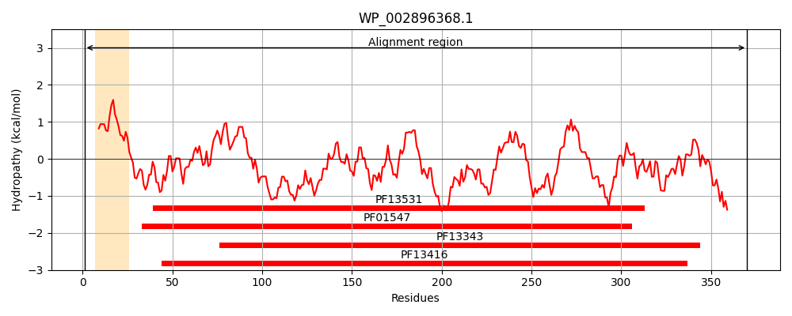
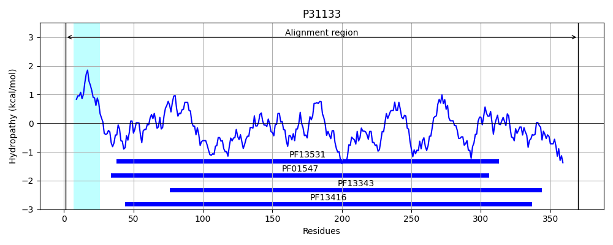
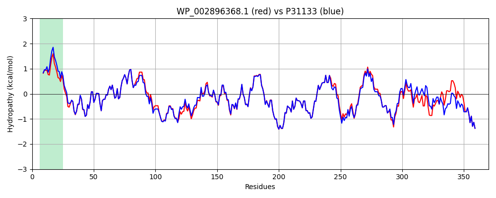

Hit Accession: P31133
Hit TCID: 3.A.1.11.2
Hit Description: gnl|BL_ORD_ID|9752 gnl|TC-DB|P31133|3.A.1.11.2 Putrescine-binding periplasmic protein precursor - Escherichia coli.
Mach Len: 370
e:0.000000
Query TMS Count : 1
Hit TMS Count: 1
TMS-Overlap Score: 1.000000
Predicted Substrates:CHEBI:8650;putrescine
BLAST Alignment:
Score: 1796 , Bit scores: 696 bits, E-value: 0.0e+00, Alignment length: 370, Percentage identity: 91
Query: 1 MTAFGKKWLTGLVTGALMAVSAGSLAAEQKTLHVYNWSDYIAPDTVANFEKETGIKVVYDVFDSNEVLEGKLMAGSTGFDLVVPSASFLERQLAAGVFQPLDKSKLPNWKNLDPEVLKLVAKHDPENKYAMPYLWATTGIGYNVDKVKAVLGKDAPVDSWDLVLKPENLEKLKSCGVSFLDAPEEIFATVLNYLGKDPNSSKADDYTGPATDLLLKLRPNIRYFHSSQYINDLANGDICVAIGWAGDVWQAANRAKEAKNGVNVSYFIPKEGALAFFDVFAMPADAKNKDEAYQFLNYLMRPDVIAKISDQVFYANGNKASTPLVSETIRNNPAIYPPADVFAKLFTLKVQDPKIDRVRTRAWTKVKSGK 370
MTA KKWL+GLV GALMAVS G+LAAEQKTLH+YNWSDYIAPDTVANFEKETGIKVVYDVFDSNEVLEGKLMAGSTGFDLVVPSASFLERQL AGVFQPLDKSKLP WKNLDPE+LKLVAKHDP+NK+AMPY+WATTGIGYNVDKVKAVLG++APVDSWDL+LKPENLEKLKSCGVSFLDAPEE+FATVLNYLGKDPNS+KADDYTGPATDLLLKLRPNIRYFHSSQYINDLANGDICVAIGWAGDVWQA+NRAKEAKNGVNVS+ IPKEGA+AFFDVFAMPADAKNKDEAYQFLNYL+RPDV+A ISD VFYAN NKA+TPLVS +R NP IYPPADV AKLFTLKVQDPKIDRVRTRAWTKVKSGK
Sbjct: 1 MTALNKKWLSGLVAGALMAVSVGTLAAEQKTLHIYNWSDYIAPDTVANFEKETGIKVVYDVFDSNEVLEGKLMAGSTGFDLVVPSASFLERQLTAGVFQPLDKSKLPEWKNLDPELLKLVAKHDPDNKFAMPYMWATTGIGYNVDKVKAVLGENAPVDSWDLILKPENLEKLKSCGVSFLDAPEEVFATVLNYLGKDPNSTKADDYTGPATDLLLKLRPNIRYFHSSQYINDLANGDICVAIGWAGDVWQASNRAKEAKNGVNVSFSIPKEGAMAFFDVFAMPADAKNKDEAYQFLNYLLRPDVVAHISDHVFYANANKAATPLVSAEVRENPGIYPPADVRAKLFTLKVQDPKIDRVRTRAWTKVKSGK 370 | Protein Hydropathy Plots: |
|---|
|  |  |
Pairwise Alignment-Hydropathy Plot:
|
|---|
|  |